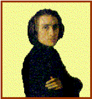

Franz LISZT

|
Nace: 22-octubre-1811 en Raiding (Hungría) |
Muere: 31-julio-1886 en Bayreuth (Alemania) |
||
|
 |
Su padre le enseña música desde
pequeño. A los nueve años da su primer concierto y los dignatarios locales, asombrados del talento de Liszt,
crean un fondo para financiar sus estudios. En 1822 se trasladan a Viena
donde deja a todos asombrados ante los sonidos mágicos que saca del piano. En
1823 aunque no es admitido en el Conservatorio de París, por ser extranjero,
su padre lo pasea por los salones de moda con gran acogida. El siguiente año
por Inglaterra. Para recuperarse de las agotadoras giras, se embarcan en
Boulogne en 1826, su padre muere. Franz se dedicará a la enseñanza. En 1835,
ya casado, se traslada a Suiza. En el 37 regresa a Viena, ya descansado, y
reanuda su actividad concertística. En 1844 le abandona su mujer. En 1847 se
enamora de la princesa rusa Carolyne Sayn-Wittgenstein. Marchan a Weimar,
donde se encarga de la dirección musical del Gran Duque. En 1859 había
perdido popularidad en Weimar y no conseguía casarse con Carolyne, así que abandona la ciudad y se
agarra a la religión y se convierte en el abate Liszt, retirándose a una
villa cerca de Roma. Durante los veinticinco años siguientes viajó desde Romo
a Humgría y a Weimar. En 1886 cogió un resfriado que
acabó en neumonía causándole la muerte. |
Obras principales: Para piano: -Años
de peregrinaje. -Estudios
trascendentales, Nos 1-12. -Consolaciones,
Nos 1-6. Escucha la Nº
3. -Sueños
de amor, Nos 1-3. -Vals
“Mefisto”. -Rapsodias
húngaras, Nos 1-20. Para
piano y orquesta: -Concierto
Nº 1 en Mi bemol. -Concierto
Nº 2 en La. -Fantasía
húngara. -Danza
macabra. Para orquesta: -Sinfonía
“Fausto”. -Sinfonía
“Dante”. -12
poemas sinfónicos destacando: -Nº 2 “Tasso”. -Nº 3 “Los preludios”. -Nº 6 “Mazeppa”. -Nº 9 “Hungaria”. -Rapsodias
húngaras. Obras corales: -Missa
choralis. -Misa
húngara de la coronación. -La
leyenda de Santa Isabel. -Oratorio
“Christus”. Otras
obras: -Ópera
Don Sanche. -Transcripciones
para piano de obras de Bach, Beethoven, Berilos, Chopin, Paganini, Rossini (Obertura de Guillermo Tell), Schubert. |
|
|
Podemos encuadrar a
este autor dentro del ROMANTICISMO |
|||